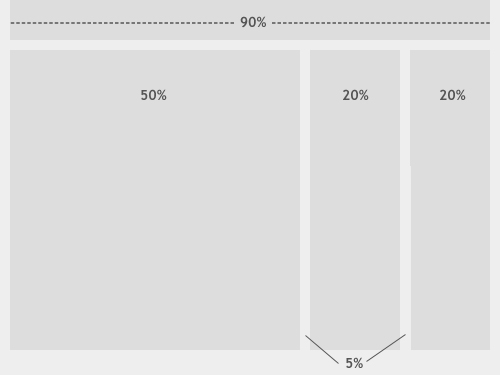

基本布局的几种方式
流体布局：
流布局与固定宽度布局基本不同点就在于对网站尺寸的测量单位不同。固定宽度布局使用的是像素，但是流布局使用的是百分比，看到百分比，你应该想到，这将提供了很强的可塑性和流动性。换句话说，通过设置了百分比，你将不需要考虑设备尺寸或者屏幕宽度大小了，结论就是，你可以为每种情形找到一种可行的方案，因为你的设计尺寸将适应所有的设备尺寸。流布局与媒体查询和优化样式技术的关系密切。 
固定布局
在固定布局中，网页的宽度是必须指定为一个像素值，一般设为960像素。在过去，开发人员发现960像素是最适合作为网格布局的宽度，因为960可以整除3，4，5，6，8，10，12和15。尽管到了今天，在web开发中还是比较普遍使用固定宽度布局的，原因是这种布局提供很强的稳定性与可控性。如果你知道你的网页宽度，就可以兼容所有浏览器与设备，你可以精确地控制图像位置，就好像一切尽在掌控之中。然而，固定宽度布局固然有些劣势，，想创建一个固定宽度布局网站的开发人员必须意识到网站是否可以在各式各样的屏幕，浏览器和设备中可用与可见地显示出来。现在市场上出现如此众多设备，意味着有各式各样的屏幕尺寸，对开发人员提出了“一种尺寸适应所有”的技术挑战，这种挑战已超越了固定宽度设计的精确度和可控制性。固定宽度的网站出错的一个常见例子就是小于960像素的屏幕尺寸是非常常见的。这样网站就不能够全屏显示了，你将看到一条水平的导航条。事实上,这些小屏幕通常用手指操作,而不是鼠标来控制。
弹性布局：
弹性布局跟流布局很相像，主要不同是大小单位。弹性布局的大小单位不是像素或者百分比，而是em。一个em单位等于定义在CSS规则：font-size的值大小。例如，我们设置文本的font-size大小为20像素，那么1em就等于20px，2em就等于40px，以此类推。这种布局为开发人员提供了一种很强的排版控制。由于绝大多数的布局主要由文本来填充，此方案使弹性布局成为许多项目的强有力的竞争者。然而，还是存在缺点就是在某些例子中依然出现令人不愉快的水平滚动条。
混合布局
最后介绍这个混合布局，是上面介绍的两种或者更多布局类型的组合。例如，开发人员可能需要设置某些指定元素（侧栏或者底部）一个固定宽度，剩下的就选择百分比或者em。明显地，这种途径还是有劣势——如果你是指侧栏的宽度为200像素，然后为剩下的内容设置为80%的宽度，当屏幕小于1000像素时，你将会看到一条水平滚动条，因为主要的列已经没有足够空间容纳了。现实中很少情况,在你的项目只会有一个元素。但是你可以很容易地解决这些问题,后面我们将会学习到。
总结：
你可能想知道什么是最好的解决方案？上面列出的四种类型布局哪种才是最适合作为响应式解决方案。你或许已经猜到,每个布局类型都有其优点和缺点。这一切都取决于你的需求和项目的特点。
这或者很容易致使你认为，这些布局之一都是普遍比其他的优秀的，但不能认为它们之间是互斥关系或是竞争对手。相反地,应该考虑技术,可以结合使用。许多这些技术不可能独立于其他技术而存在的。例如，如果没有定义固定字体大小，em就是没有意义的。同样，如果没有精确宽度来适应流行的屏幕尺寸，媒体查询也将是无意义的。
著作权归作者所有。 商业转载请联系作者获得授权,非商业转载请注明出处。 原文: http://www.w3cplus.com/responsive/responsive-web-design-fluid-layouts.html